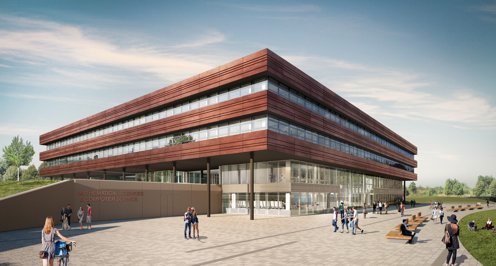

PhD Projects
We're looking for potential PhD students to join our group. These are two interresting research questions, one from DL and the other from RL respectively:
- How do we approach generative modelling?
- There are curently about 7 equation classes in the generative modelling literature, most of which estimate the probability of data. Each related modelling approach (GANs, Flows, VAEs, Diffusion, OT, Autoregressive) have trade-offs in terms of (i) modelling quality, (i) inference time/depth, and (iii) distribution coverage/mode collapse. In the future, I think we will have richer theoretical insight into these trade-offs, and more adaptive and expressive ways to model distributions of data.
- How do we decide what to do?
- As humans, we set our own goals and discover knowledge without depending on environment reward. Intelligent people don't sit in front of the TV all day; they are active and constantly explore at the fringes of their knowledge while developing new skills. How do we model this problem of deciding what to do? In the future, I think we will understand the fundamental mathematical principles that allow us to train simulated agents/robots to learn their own language, skills, survival and exploration strategies without relying on reward explicitly determined by the environment.
Do you have thoughts on this? Would you like to explore similar research? Drop me an email at christopher.g.willcocks@durham.ac.uk.
PhD Funding
Please read the guidelines for securing funding along with other guidance such as the entry and language requirements. There are a number of ways to secure funding including Durham Doctoral Studentships (DDS) which are fully-funded 3.5 year PhD studentships. Please contact me to discuss a proposal and send me your CV along with a statement of your research interests.
Students can also receive scholarships from their home countries, Please see the following link for more information about eligibility. Alternatively, you may wish to self-fund your studies, please email me if this is something you wish to consider.
Research at Durham
Durham is a beautiful historic cathedral city situated in the north-east of England, where the University has long traditions but modern values. The deparment of Computer Science has a wonderful friendly and supportive culture with access to exceptional resources such as a world class supercomputer, Hamilton, and we have access to the new EPSRC Tier 2 National HPC facility (“BEDE”) hosted in Durham and operated by ARC on behalf of the N8 Universities. The department of Computer Science boasts an impressive new £40 million building (finished in 2020) and maintains our own NVIDIA Compute Center (recently upgraded with a £150,000 node of GPUs) configured for Deep Learning.
 |
 | |
| Cathedral View | Framwellgate Bridge | Maths and Computer Science |
Visiting Scholars
If you are interested in a visiting position, either as an academic scholar or as a PhD student, please email me as above. I am interested in candidates with strong mathematical ability in statistics, machine learning, or geometry. Durham has particularly low living/housing/accomodation costs coupled with an exceptionally high-quality of life, and our building is designed to be accessible for parents.